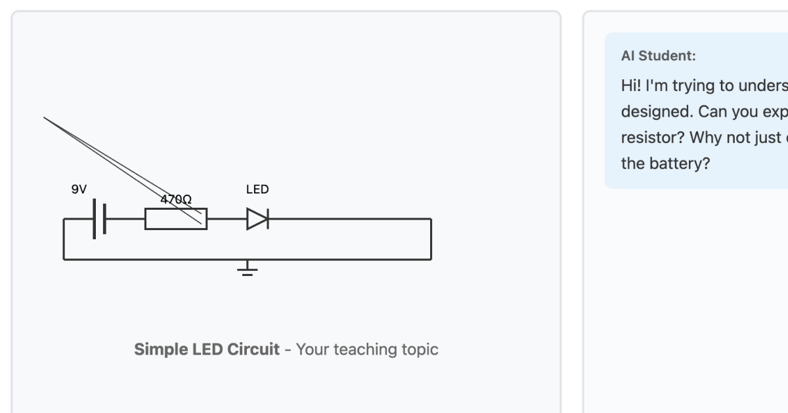
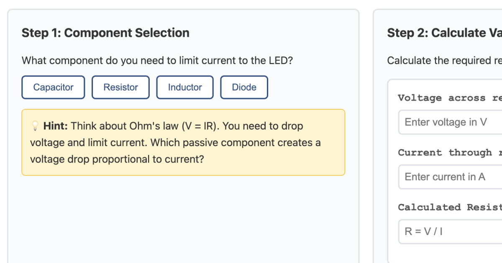
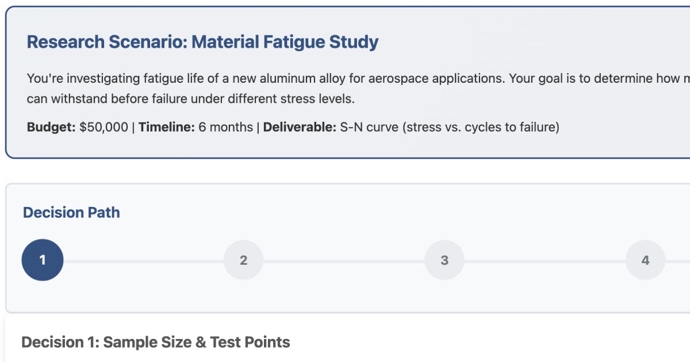
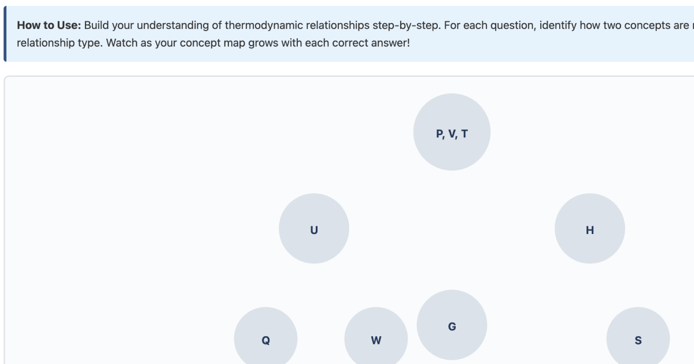

Prototypes for science and engineering education
This project demonstrates how Learning Designers can rapidly prototype interactive learning experiences using AI-assisted development. All four prototypes showcased here were planned, designed, and built entirely using Claude Code in the terminal, leveraging Planning Mode to think through pedagogical approaches before implementation.
The UI and UX design was also crafted collaboratively with Claude. Design examples and instructional design requirements were provided, which Claude translated into a clean, academic interface optimized for educational content. This demonstrates how experienced LXDs and UX designers can leverage AI as a collaborative tool to work together, accelerating the design-to-prototype workflow while maintaining full creative control.
Matthew White is a Product Designer & AI UX Strategist with 18+ years of experience in technical training and educational technology. He specializes in translating complex technical concepts into scalable learning experiences for Fortune 500 companies, regulated industries, and educational institutions.
Matthew has designed solutions serving 100k+ users, reduced training development cycles from months to weeks, and created AI-driven learning experiences that accelerate user adoption and drive measurable business outcomes.
Read More: UX & Learning Design Collaboration →

Teach circuit design concepts to an AI student who asks probing questions to deepen your understanding.

Design circuits with adaptive guidance that fades as you build independence and mastery.

Build visual connections between thermodynamic properties to develop a holistic mental model.

Navigate research methodology decisions and see how your choices impact experimental outcomes.
Claude Code's Planning Mode provides a powerful workflow for instructional design:
Example Application: An LXD designing compliance training could use Planning Mode to discuss branching scenario approaches, then rapidly prototype three different interaction models (decision trees, consequence-based narratives, or role-play simulations) to test with stakeholders—all within a single afternoon instead of waiting weeks for developers.
Learning Experience Designers can use Claude Code to bridge the gap between instructional design and product development:
Example Application: When proposing an onboarding platform redesign, an LXD could collaborate with Claude Code to draft PRD sections that translate "reduce time-to-proficiency" into specific features like adaptive scaffolding, spaced repetition algorithms, and competency-based progression gates—creating alignment between business goals and learning science from day one.
Interactive prototypes are powerful tools for securing support from key stakeholders:
Example Application: Instead of presenting a 40-slide deck proposing a new microlearning approach, an LXD could share a working prototype where executives experience a 3-minute interactive lesson themselves. Stakeholders immediately understand the value proposition, retention mechanics, and mobile-first design—leading to faster approval and budget allocation.
These prototypes can be tested through multiple approaches:
Example Application: An LXD designing technical certification prep could deploy two prototype quiz formats to 50 beta learners via shareable links—one with immediate feedback and one with delayed explanations. Analytics from asynchronous testing reveal which approach yields better retention scores, informing the final design before investing in full development.
Explore the behind-the-scenes process of creating these prototypes: